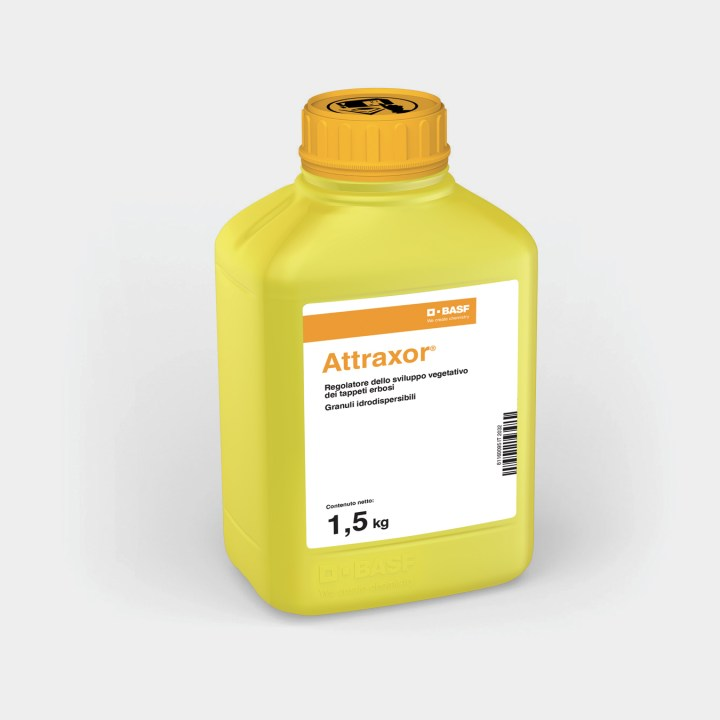

Attraxor: i consigli dell’agronomo
Ci troviamo nel momento di crescita del nostro tappeto erboso, in pieno periodo
Estivo, che porta con sé un alto numero di stress biotici e abiotici da fronteggiare. Tra le sfide quotidiane
di questo periodo possiamo trovare: la crescita eccessiva, l’irregolarità del manto e l’intensità di utilizzo del
tappeto erboso oltre all’insorgenza sempre maggiore di malattie fungine.
La gestione moderna del tappeto erboso richiede soluzioni efficaci, sostenibili e tecnicamente avanzate per garantire prestazioni elevate in ogni condizione e in qualsiasi periodo stagionale.
Per rispondere a queste esigenze, BASF propone Attraxor®, il regolatore di crescita a base di proexadione
calcio, pensato per ottimizzare la densità, l’uniformità e la qualità visiva del prato, riducendo al contempo il
numero di tagli e i residui vegetali.
In questa newsletter, vi indicheremo le caratteristiche di Attraxor e alcuni consigli d’impiego.
Attraxor® è il regolatore di crescita a base di proesadione calcio, sviluppato da BASF per ottimizzare la
gestione del tappeto erboso su superfici ad alta intensità d’uso come campi da golf, campi sportivi e aree
ricreative. Il principio attivo proesadione calcio è un inibitore della biosintesi delle gibberelline. Bloccando
la trasformazione dell’acido gibberellico GA20 in GA1, responsabile dell’allungamento cellulare, Attraxor®
rallenta selettivamente la crescita fogliare, senza interferire con altre funzioni fisiologiche vitali del tappeto
erboso.
Grazie al suo meccanismo Attraxor® controlla la crescita verticale, promuove l’accestimento laterale e
radicale, migliorando la qualità estetico-funzionale del prato, riducendo oneri di manutenzione e
contribuendo a una gestione più sostenibile ed efficiente.
Il risultato è una pianta più compatta, robusta e meglio predisposta a tollerare stress biotici e abiotici.
🌱 Che vantaggi offre ?
Attraxor® grazie alla sua efficacia nel controllo della crescita e propagazione di tutte le principali specie
microterme usate per il tappeto erboso professionale, offre numerosi vantaggi ambientali, economici,
agronomici e gestionali...
🧪 Quando e a che dose impiegarlo?
Attraxor (p.a. Proesadione-calcio) è un prodotto registrato su tappeti erbosi come regolatore della crescita...
📋 Consigli per l’uso
• Si consiglia l’applicazione di Attraxor su tappeti erbosi di tutte le più comuni specie di Micro- e Macro-terme...
• Attendere almeno 1 h dopo il taglio prima di applicare Attraxor...
• ...
Il nostro team tecnico è a vostra disposizione per definire programmi personalizzati di applicazione...